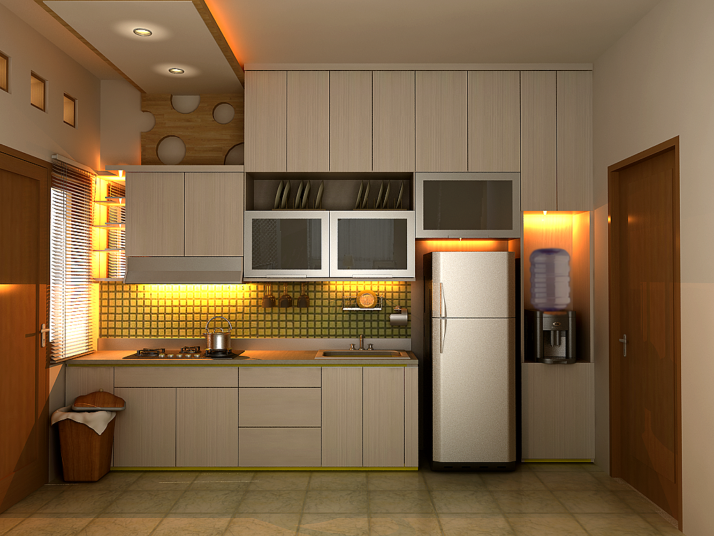

Anda membuat keputusan yang penting untuk memilih kontraktor yang tepat. Kontraktor yang tepat akan
menjamin
rumah Anda dikerjakan dengan rapi, berkualitas, memiliki konstruksi yang kuat dan kokoh dengan tampilan
desain fasade yg elegan dan aesthetic secara keseluruhan. Rumah merupakan representasi dari karakter
pemiliknya, kami sangat memahami hal tersebut, dan akan memberikan yang terbaik.
TEAMWISNU Kontraktor memiliki tim arsitek internal dengan brand Wisnu Arsitek, adapun terlampir beberapa
desain bangunan yang pernah kami kerjakan berikut dengan foto real bangunan yang sudah finish 100%.
Banyak
dari para customer tertarik dengan desain 3D dari TEAMWISNU Kontraktor, karena desain-desain kami
dijamin
100% original, bukan copy paste dari google, social media, maupun pekerjaan tim arsitek atau kontraktor
lainnya. Jadi semua desain yang kami kerjakan terjamin tingkat ke-originalitasnya.
Dengan memilih kontraktor yang AMANAH dan TERPERCAYA, maka anda akan terhindar dari beberapa resiko yang
mungkin akan terjadi, diantaranya :
- Kontraktor tidak mengerjakan sesuai spesifikasi yang disepakati
- Kontraktor menaikan harga secara sepihak di tengah proses pengerjaan
- Tenaga kerja kontraktor tidak tersedia, sehingga proyek tidak selesai tepat waktu
- Kesalahan/ kegagalan konstruksi, sehingga bangunan retak atau miring
- Waterproofing atau proses pemipaan yang kurang baik, sehingga bangunan mengalami kebocoran
- dan Pemasangan jaringan listrik yang kurang bagus, sehingga mengakibatkan resiko terjadinya
korsleting
listrik
Pentingnya Konstruksi Rumah
Konstruksi sangat penting untuk menentukan durabilitas bangunan, bangunan tidak miring, bangunan tidak
retak, dan perhitungannya sesuai dengan jumlah lantai yang akan dibangun. TEAMWISNU Kontraktor terdiri
dari
tim arsitek dan teknik sipil yang professional dan berpengalaman di bidangnya yang bisa menyarankan
spesifikasi konstruksi yang sesuai (tidak berlebihan karena akan menambah beban cost), namun juga tidak
kurang (karena akan berdampak buruk bagi keamanan bangunan dan keselamatan penghuninya).
Pentingnya Konstruksi Rumah
Konstruksi sangat penting untuk menentukan durabilitas bangunan, bangunan tidak miring, bangunan tidak
retak, dan perhitungannya sesuai dengan jumlah lantai yang akan dibangun. TEAMWISNU Kontraktor terdiri
dari
tim arsitek dan teknik sipil yang professional dan berpengalaman di bidangnya yang bisa menyarankan
spesifikasi konstruksi yang sesuai (tidak berlebihan karena akan menambah beban cost), namun juga tidak
kurang (karena akan berdampak buruk bagi keamanan bangunan dan keselamatan penghuninya).
Fasade Bangunan
Bagian depan rumah sangat penting untuk citra rumah Anda secara keseluruhan. Bagian depan rumah
meliputi :
- Desain Fasade
- Pagar
- Carport
- Kanopi
- dan Landscape
TEAMWISNU Kontraktor akan menyarankan desain yang membuat rumah Anda sesuai dengan karakter Anda,
sekaligus tampak elegan dan aesthetic secara keseluruhan. Dengan kata lain kami akan menyajikan
desain
bangunan anda dengan konsep SMART DESIGN.
Tata Ruang Denah Secara Keseluruhan
Tata ruang sangat penting untuk menjawab keperluan keluarga Anda, sesuai dengan pengarahan yang Anda
berikan terkait kebutuhan ruangan, sehingga akan tercipta denah dengan tata ruang yang ideal
menyesuaikan fungsi dan kebutuhan penghuninya. Kami akan menyarankan penataan ruang tamu, ruang
makan,
kamar tidur utama, kamar tidur anak, dapur, area servis , area bermain (apabila diperlukan), area
keluarga apabila diperlukan), area ruang kerja di rumah (apabila diperlukan).
Pembuatan Kamar Mandi
Pembuatan kamar mandi sangat ditentukan oleh waterproofing dan jaringan pipa yang bagus. Keunggulan
pengerjaan kamar mandi dari TEAMWISNU Kontraktor adalah sebagai berikut :
-
Waterproofing tiga lapis, untuk memastikan terhindar dari kebocoran
-
Pemasangan jaringan dan sambungan pipa yang anti bocor
-
Pemasangan keramik yang rapi dan presisi
-
Pemakaian cat yang berkualitas dengan warna yang menarik
-
Pemasangan washtafel dengan durabilitas yang baik
-
Pemasangan closet yang tidak ada masalah dengan flash termasuk jaringan air secara keseluruhan
Pembuatan Kitchenset
TEAMWISNU Kontraktor akan membuatkan dapur terdiri dari cor beton dan granite tile, zinc serta kran air.
Untuk kabinet atas dan kabinet bawah adalah bagian dari pekerjaan interior. Dapur yang baik memiliki
saluran air yang anti bocor, dan saluran pembuangan yang tidak mudah tersumbat.

Pengerjaan Genteng & Pemasangan Lapisan Anti Panas
Konsultasikan jenis genteng yang sesuai dengan budget dan keperluan, jenis-jenis genteng sebagai berikut
:
-
Genteng Asbes
Genteng asbes secara harga sangat terjangkau, akan tetapi kurang direkomendasikan, karena selain
selain durability kurang juga memiliki efek yang kurang baik terhadap indra penciuman.
-
Genteng Kaca
Genteng kaca biasanya dipasangkan di beberapa titik, agar ruangan terasa lebih terang.
-
Genteng Keramik
Genteng keramik memiliki bahan hampir sama seperti keramik lantai, akan tetapi ada tambahan lapisan
mengkilat. Secara durabilitas dan estetika sangatlah recommended.
-
Genteng Metal
Genteng Metal durabilitas yang bagus, akan tetapi tidak kedap suara ketika hujan deras.
-
Genteng Tanah Liat
Genteng Tanah Liat secara harga terjangkau, tapi ada resiko lumut yang berdampak kerapuhan genteng.
Pengerjaan Lapisan Anti Panas
Ada beberapa alternatif pelapis anti panas, yaitu : alumunium foil, cellulose fiber, glasswool dan
polyurethane foam. Untuk mendiskusikan alternatif anti panas yang sesuai untuk rumah Anda, konsultasikan
dengan Account Manager TEAMWISNU Kontraktor
Batako, Bata Merah, dan Hebel
Material dinding batako umumnya dibuat dari campuran semen, pasir kasar yang dicetak padat atau dipress.
Selain itu ada juga yang membuatnya dari campuran batu tras, kapur dan air. Bahkan kini juga beredar
batako yang dibuat dari campuran semen, pasir dan batubara. Dengan bahan pembuatan seperti yang telah
disebutkan, batako memiliki kelemahan yaitu kekuatannya lebih rendah dari bata merah atau habel,
sehingga cenderung terjadi keretakan dinding, terutama jika bagian kosongnya tidak diisi dengan adukan.
Pemakaian material batako untuk dinding juga membuat dinding lebih hangat atau bahkan cenderung pengap
atau panas. Oleh karena itu di luar harganya yang murah, batako kurang kami rekomendasikan.
Material bata merah adalah bata yang dibuat dari tanah yang dicetak kemudian dibakar dengan suhu tinggi
sehingga menjadi kering, mengeras dan berwarna kemerah-merahan. Material ini cenderung tahan lama dan
jarang terjadi keretakan dinding yang dibangun dari bata merah.Kelebihan bata merah : ukuran lebih
kecil, memudahkan untuk pengangkutan, mudah untuk membentuk bidang yang kecil, harga lebih murah
dibanding habel, mudah mendapatkannya, perekatnya tidak perlu perekat khusus, sedangkan kekurangan bata
merah adalah : lebih sulit membuat pasangan bata yang rapi karena ukurannya kecil, menyerap panas pada
musim panas dan menyerap dingin pada musim dingin, sehingga kondisi ruangan tidak terlalu stabil, berat
sehingga menimbulkan beban pada struktur bangunan. Material bata merah cukup direkomendasikan.
Material Bata Ringan(Hebel)
Hebel dibuat dengan menggunakan mesin pabrik. Hebel cukup ringan, halus dan memiliki tingkat kerataan
yang baik. Hebel diciptakan agar dapat memperingan struktur dari sebuah bangunan konstruksi dan
mempercepat pelaksanaan. Kelebihan bata ringan : kualitas yang seragam sehingga menghasilkan dinding
yang rapi, lebih ringan dari bata biasa sehingga memperingan beban struktur, kedap air sehingga kecil
kemungkinan rembesan air, memiliki kekedapan terhadap suara yang baik, kuat terhadap tekanan yang tinggi
dan memiliki ketahanan yang baik terhadap gempa bumi. Kekurangan hebel adalah : perekatnya khusus yaitu
semen instan (harga lebih mahal), perlu keahlian khusus untuk memasangnya, harga lebih mahal
dibandingkan bata merah, tidak mudah didapatkan di toko material biasa (harus di toko material lebih
besar), pembelian harus dalam volume yang besar. Material hebel direkomendasikan untuk bangunan rumah
Anda.